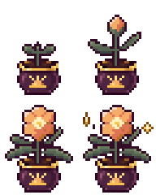
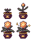
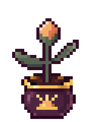
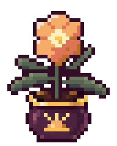
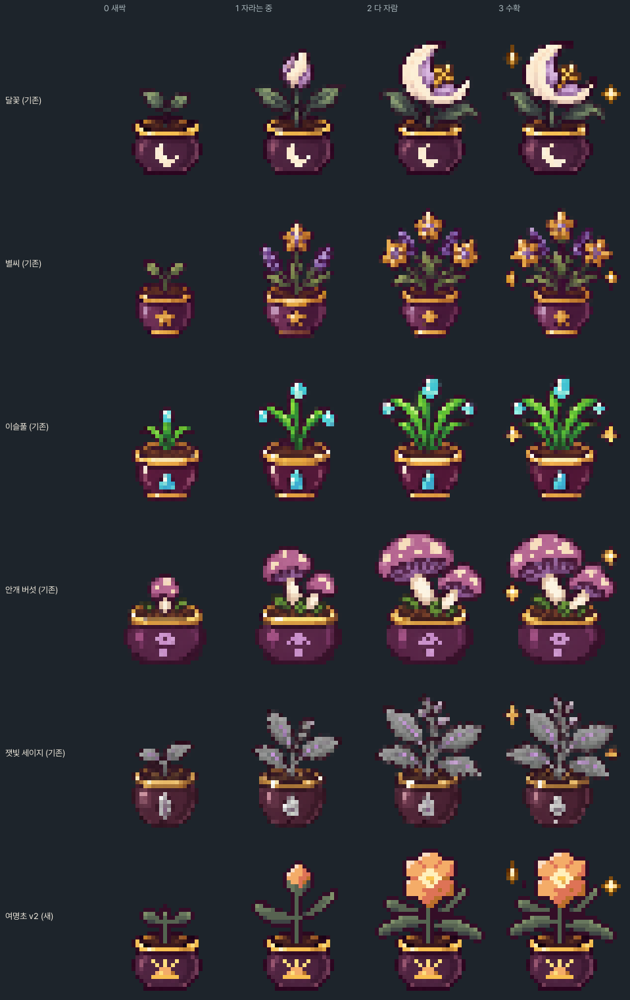
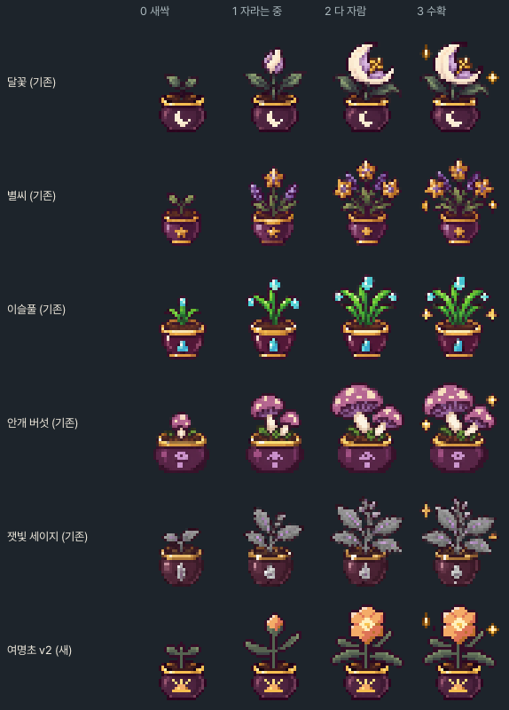
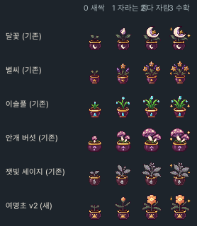
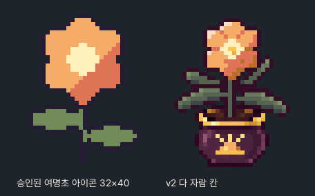
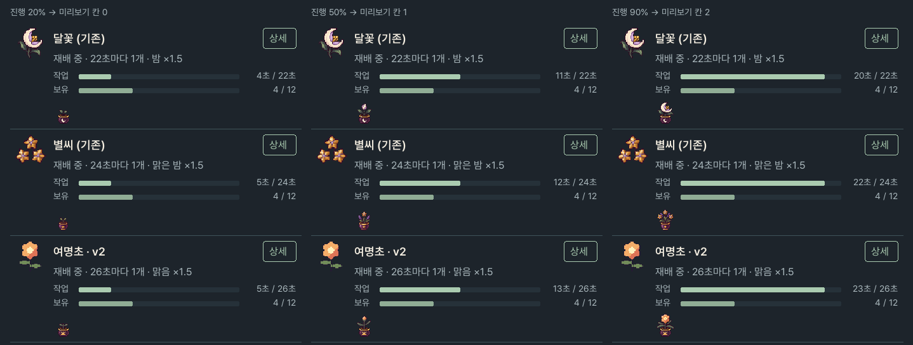
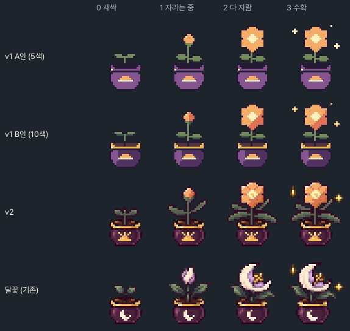

여명초(dawn_bloom) 화분 성장 그림 후보 v2
2026-11-05 · 상태 후보(candidate) · 게임 미연결 · 승인 전 · v1(../f26-dawn-bloom-growth-v1/)은 그대로 보존.
승인되면 catalog.json 여명초 행에 growth_path: res://assets/content_expansion_v1/materials/dawn_bloom_growth.png만 더한다.
source/*.txt),
수확 칸 반짝임은 달꽃 칸 3의 반짝임 픽셀을 그대로 옮겼다.1. v2 시트와 단계별 6배




2. 기존 성장 그림 5종과 나란히 · 6배

3. 같은 비교 · 3배 / 1배


4. 다 자란 꽃 대 승인 아이콘 (6배)

아이콘의 여섯 꽃잎 실루엣·크림색 육각 꽃심·오른쪽 아래 산호색 그늘을 16×15로 줄이고, 기존 꽃처럼 꽃잎 이음선·왼쪽 위 하이라이트(#FADDC3)·아래쪽 깊은 그늘(#B96F2B)·금빛 꽃술(#F9C54F)을 더했다.
5. 관리 · 약초 탭 행 (원본 1배 · 근사)
v1과 같은 근사: 패널 폭 458, 48×48 아이콘(여백 자른 뒤 KEEP_ASPECT 최근접), 제목 18·상세 52×32, 상태 줄 16, 작업/보유 막대, 성장 미리보기 32×40 원본 1배. Python 근사이며 Godot 캡처가 아니다.

6. v1 ↔ v2

7. 기존 10종 관찰과 수치
- format 64×80, 32×40 칸 2×2(0 새싹·1 자라는 중·2 다 자람·3 수확 반짝임). 모든 칸 바닥 행 38.
- pot herb만 다리 달린 솥형. 나머지 9종은 어두운 자두색 몸통(가운데 #4C223E 안팎, 왼쪽 분홍빛 밝은 면 #95556E, 오른쪽 #3E1932)·금테(#F8BE50/#FDDE7E)·흙(#3C2428 안팎)·재료별 문양(행 31~36, x 13~18, 외곽선 없이 몸통 위에 직접)을 공유. 칸마다 따로 생성돼 같은 시트 안에서도 화분 픽셀이 300~450개 다르다.
- outline 식물 외곽선은 #241C32가 아니라 어두운 자두색(#340E27·#370E2B 군집), 1픽셀.
- leaves 끝이 뾰족한 렌즈형 잎. 새싹 2장(3×3~5×4), 자라는 중 2~4장(8~10픽셀 길이, 위로 비스듬히), 다 자람 4~6장(아래로 늘어져 화분 테를 덮기도 함). 명암 3~4단(달꽃 #3F4545→#576351→#68785E→#80916A) + 어두운 외곽선.
- stem 1픽셀 초록 줄기(달꽃 #536550 안팎)와 양옆 어두운 픽셀. 흙 속으로 이어진다.
- bloom 자라는 중 칸에 닫힌 꽃봉오리(5~7픽셀 폭, 꽃받침), 다 자람 칸에 큰 꽃 1개(14~16픽셀) 또는 작은 꽃 여러 개. 꽃은 3~4단 명암 + 하이라이트.
- sparkle 수확 칸에 5×5 십자 반짝임 2~4개(끝 갈색 #7D4A0E 계열, 팔 금빛, 가운데 크림).
- alpha 불투명해 보이는 픽셀도 알파 240~254로 저장돼 있고(255는 0개), 실루엣 둘레에 알파 1~127 픽셀이 시트당 약 280~350개 있다.
| 시트 | RGB 색 수 | 반투명 픽셀 | 알파 255 픽셀 | 칸 0/1/2/3 식물 꼭대기 행 | 칸 0/1/2/3 식물 픽셀(행 24 위) |
|---|---|---|---|---|---|
| herb | 1959 | 2629 | 9 | 12 / 8 / 2 / 2 | 165 / 219 / 407 / 425 |
| starleaf | 1445 | 1783 | 8 | 20 / 14 / 1 / 1 | 28 / 78 / 316 / 329 |
| dewgrass | 1684 | 1888 | 0 | 15 / 8 / 7 / 7 | 54 / 145 / 218 / 245 |
| silver_moss | 1346 | 1805 | 0 | 18 / 12 / 11 / 9 | 60 / 144 / 237 / 270 |
| blue_reed | 1590 | 1851 | 0 | 17 / 6 / 3 / 3 | 37 / 133 / 256 / 269 |
| crystal_herb | 1431 | 1625 | 0 | 19 / 13 / 8 / 8 | 19 / 82 / 205 / 220 |
| mist_mushroom | 1642 | 2302 | 0 | 16 / 9 / 5 / 5 | 58 / 195 / 352 / 381 |
| ash_sage | 1746 | 2122 | 0 | 17 / 9 / 5 / 5 | 62 / 170 / 293 / 312 |
| moonflower | 1701 | 2042 | 0 | 17 / 7 / 5 / 5 | 54 / 180 / 273 / 304 |
| star_seed | 1690 | 1860 | 0 | 19 / 9 / 6 / 6 | 36 / 150 / 250 / 266 |
| 여명초 v2 | 212 | 0 | 1870 | 17 / 6 / 3 / 3 | 62 / 159 / 325 / 352 |
화분 출처: assets/content_expansion_v1/materials/moonflower_growth.png 칸 0, 행 24~38 · 문양 교체 15픽셀 지움 + 해돋이 21픽셀 · 반짝임: assets/content_expansion_v1/materials/moonflower_growth.png 칸 3에서 칸 2에 없던 픽셀(반짝임 2개) 27픽셀(오른쪽 반짝임은 잎과 겹쳐 6행 위로 옮김)
8. 스스로 본 판단
- 화분: 달꽃 화분 픽셀 그대로라 옆 그림들과 구분되지 않는다. 해돋이 문양은 달·별 문양과 같은 자리·크기(7×5)로 외곽선 없이 몸통 위에 직접 칠했다.
- 식물: 잎이 끝이 뾰족한 렌즈형이고 명암이 4단(+외곽선)이라 달꽃·별씨 잎과 같은 밀도로 읽힌다. 단계별 키와 픽셀 수는 기존 9종 범위 안이다(아래 표).
- 남은 차이: 기존 그림은 생성 그림이라 픽셀마다 색이 조금씩 흔들리는 잡음 질감(시트당 1,300~2,000색)이 있다. v2는 화분만 그 질감(복사한 약 200색)이고 식물은 손으로 칠한 13색 덩어리라 6배로 확대하면 잎·꽃이 화분보다 매끈하다. 1배(관리 화면 실제 크기)에서는 차이가 거의 보이지 않는다.
- 남은 차이: 잎이 달꽃 잎과 같은 회녹색 계열이라 이슬풀처럼 밝은 초록 시트와 나란히 두면 차분해 보인다. 꽃 쪽으로 시선이 가도록 일부러 고른 색이다.
- 남은 차이: 기존 시트는 칸마다 화분이 조금씩 다르게 생성돼 있는데 v2는 네 칸 모두 같은 화분이다(흔들림 없음).
검사 결과: validation.json · 승인 상태: approval.json